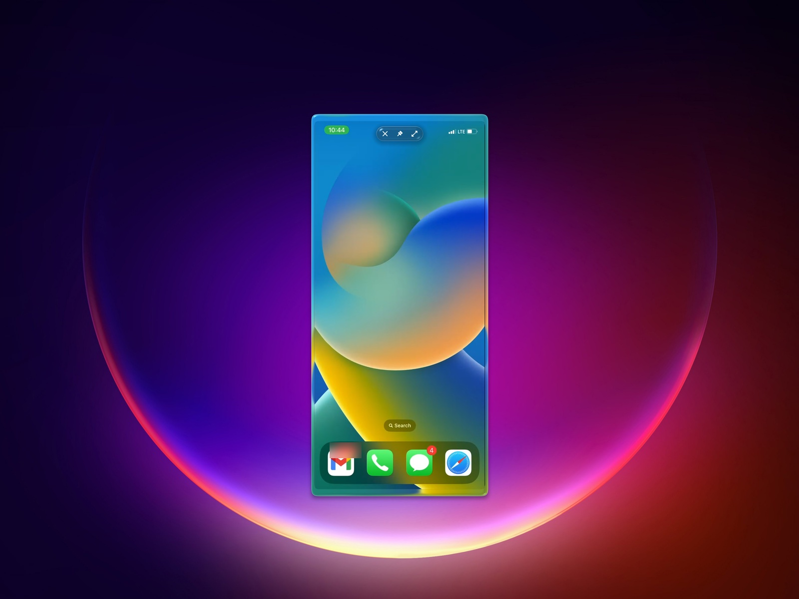

How to record your iPhone screen on a Windows PC, with sound
iOS's built-in screen recording only saves to the phone. To get an MP4 on your Windows PC, with sound, mirror the iPhone over AirPlay and record the mirrored window there instead.

Why record through a PC instead of on the phone
iOS Control Center's Screen Recording saves straight to the Photos app on the device. That's fine for a quick clip, but it's awkward if you want the file already on your PC: for a tutorial, a bug report, a demo for a client, or editing in desktop software. Mirroring the iPhone to Windows with AirGlass and recording the mirrored window puts the finished MP4 directly in Videos\AirGlass, with the phone's sound captured as well.
What you need
AirGlass is free to mirror your iPhone, iPad or Mac to Windows. Recording to MP4 is one of the features in AirGlass Pro ($9.99, one-time, usable on up to 3 PCs), alongside screenshots, drawing, region zoom and OBS mode.
- Install AirGlass. Download the installer and run it. It sits in the tray and starts with Windows.
- Mirror your iPhone or iPad. Open Control Center and tap Screen Mirroring, then choose your PC's name. The screen appears in a glass window within a second.
- Start recording. Press R, or right-click the tray icon and choose Start recording. The tray shows the running time while it records.
- Stop and open the file. Press R again, or use the tray menu's Stop recording and Open recordings folder. The MP4 is in Videos\AirGlass.
Does the recording have sound?
Yes. A recording begins with a silent audio track, and the phone's real sound joins it the instant AirPlay audio starts, so the saved MP4 stays in sync even if sound arrives a moment after the picture. The video itself is the sender's original H.264 stream, copied rather than re-encoded, so you get full quality at almost no CPU cost. If the device rotates mid-recording, AirGlass finishes the file by itself rather than mixing two orientations into one clip.
Mirroring is free. Recording is part of Pro, $9.99 once.
Download AirGlassTips for a clean recording
Turn on Do Not Disturb
A notification banner during Screen Mirroring shows up in the recording too. Turning on Focus or Do Not Disturb on the phone before you start keeps the screen clean.
Keep the phone awake
If the phone locks, mirroring (and the recording) ends. Set Auto-Lock to Never while you record, or keep it plugged in and on a stand.
Same network, every time
The phone and PC need to be on the same network for AirPlay to work at all. See the full AirPlay-to-Windows guide if your PC doesn't show up in Screen Mirroring.
Questions
Can I record my iPhone screen straight to a Windows PC?
Yes. Mirror the iPhone to the PC over AirPlay with AirGlass, then press R to record the mirrored window to an MP4 on the PC. iOS's own screen recording only saves to the phone.
Does the recording include sound?
Yes. The recording starts with a silent audio track and the real sound joins it the moment AirPlay audio arrives, so picture and sound stay in sync in the saved MP4.
Do I need AirGlass Pro to record?
Yes. Mirroring is free in every edition; recording, screenshots, drawing, zoom and OBS mode are part of the $9.99 one-time Pro upgrade, usable on up to 3 PCs.
What format and quality is the recording?
An MP4 in Videos\AirGlass. AirGlass copies the sender's H.264 video stream directly instead of re-encoding it, so the picture keeps its original quality and recording uses almost no CPU.
Can I put the iPhone in OBS instead of recording an MP4?
Yes — see how to put your iPhone in OBS on Windows for live streaming instead of a saved file.
Related: Put your iPhone in OBS · Mirror two iPhones to one PC · Compare AirPlay receivers